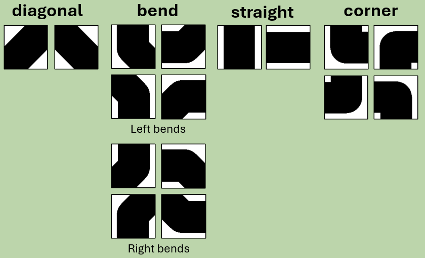

Celtic Code: Drawing knots with Python
2nd February 2025I have made a web app that uses Python to create Celtic knots and it's really fun!
Go-to > The programming project
Go-to > The web-app
Go-to > The source code
Above: An example Celtic knot, drawn programmatically
The Celts were dispersed tribes of peoples with a shared linguistic and cultural history which lives on today in modern languages, especially Welsh, Irish and Scottish Gaelic. This post takes the instantly-recognisable Celtic knot as a jumping-off point for briefly exploring the history of the Celts and rope/knots before detailing how I programmed a web app to create Celtic knots in just a few clicks.
The Celtic PeoplesThe “Celtic Peoples” lived across Europe and Western Asia but their origin is essentially contested, with theories debating Westwards, Eastwards, or even Outwards (from the centre) expansion. Early linguistic roots are proposed to have emerged between 3000-1000 BC, with Celtic languages becoming more defined around 400 BC.
By 500 AD the expansion of the Roman Empire restricted the Celts to Ireland, Western and Northern Britain and Brittainy, in turn leading to greater socio-cultural cohesion (ref). It’s in those regions that the archaeological record and cultural legacy of the Celts is most pronounced. In Glasgow, evidence of the Kingdom of Strathclyde includes the Govan Stones, a series of carved sarcophagi, crosses and hogbacks (in turn a result of Viking influence). Around the same time (c 800 AD) the Book of Kells was made in Ireland or Scotland, featuring lavish decoration featuring highly complex Celtic knots in many styles throughout.
Utility and knowledge; can-knot or can-notObviously, knots serve a primarily utilitarian function and are likely one of the oldest human technologies. The archaeological record for knots is limited by the degredation of rope, so the earliest evidence of their invention is simply holes in stone or bone tools, or pieces which would have been tied together, such as a flint to a spear.
Knots are themselves immaterial, being formed from a relative motion of strands and objects, but completely transform the usefulness of the thing(s) they tie together, and the medium they are tied into. Knots can connect, slide, release, hold, restrain, transmit; there are an unknowable number of different knots and each is intentionally selected for its properties. Knowledge of a specific knot provides access to the properties it provides, if not, not.
Knots are, in various activities, essential knowledge without which you simply cannot participate. In my life the figure-of-eight knot is a prerequisite for climbing – it’s simple, easy to inspect and self-tightening yet easy to loosen even after a fall. In a broader context, knots have been used throughout history for diverse needs. Construction, fishing, record-keeping, decoration, textiles and equipment for warfare – they all need knots.
Knots todayAre knots now an irrelevant relic of the pre-digital age? No, but I think the role of knots as a technology has changed along with our materials and needs. Division of labour has kindly relieved me, the office worker, of the need to know how to tie more than my climbing rope, shoelaces and, occasionally, a formal tie. Contemporary ropes are predominantly synthetic and in many applications replaced by alternative technologies like tape or metal cable, yet, in certain contexts, ropes (and thus knots) stubbornly persist.
It’s hard to imagine the obsolescence of ropes and knots in activities like (small-medium scale) fishing, climbing or camping. I wonder if this has to do with the flexibility, independence and human-scale of knotting combined with the impressive strength to weight ratio, corrosion resistance and durability of synthetic ropes.
Ropes themselves have undergone continuous technological development in manufacturing methods, materials and design (I recommend this interesting if slightly nostalgic article on the topic on lowtech magazine). Ropes are either braided or twisted (digression: ISO 2 defines the direction of rope twist. ISO 1 defines a standard reference temperature) and are today made from a wide variety of primarily synthetic materials such as Polypropylene, Nylon, Polyester but also natural materials such as cotton, hemp, manila and sisal. Composites can be constructed to combine the desireable qualities of multiple materials. Synthetics have the advantage of greater strength, lower cost and reduced biodegradability and can be made to float - with obvious benefits. Incidentally, the primary function of twisting or braiding fibres to form rope is to distribute tension better between all fibres, rather than loading fibres in order of length.
Today we are more likely to be interacting with cables than ropes. Modern electrical cables, electromagnets and motor windings all depend on highly technical and exact braids, coils and windings for their engineered functions. Coiling and the use of several strands in electrical cables provides flexibility, redundancy and a higher current carrying capacity than a solid conductor would. Cable screening, shielding and armour all provide essential mechanical or electromagnetic interference protective properties and motor or generator windings exploit the electromagnetic effect to translate electricity to rotation or vice versa. Cables are not ropes and windings are not knots, yet some of the essential properties of each persist in these modern applications.
Geometric appealSave for upbringing and environment, we are cognitively very similar to the 8th century Celt. While inventing and learning basic knots is no longer at the technological cutting edge, perhaps there is a distant lineage to today’s complex manipulation of cable and wire for electrical and digital needs.
That more abstract representations of these patterns as geometric forms finds an expression as an artform suggests, to me anyway, an appeal to interest and intellect. Perhaps having the capacity to finding interest in such complexities encourages us to experiment and learn, thus resulting in indirect survival benefits through knowledge and innovation. Does the expression of art arise partly from this same mechanism?
Many cultures have also used knots to express metaphors; the pattern of 4 snakes coming from a central boss, as featured on the Celtic “Sun Stone” in Govan is apparently an early Christian metaphor for rebirth, based on how snakes shed their skin (ref). The Ouroboros motif appears in many cultures and features a snake or dragon consuming its own tail, symbolising the cycle of life (among other concepts).
On a more abstract level, that a knot makes two strands into one is conceptually interesting; adding in ideas like the endless knot and symmetry or applying geometric visual patterns can make knots compelling to look at as an artform.
Both physical and geometric infinite knots crop up throughout history in many cultures. Some more or less related examples include Korean knots (Maedeup), Chinese knots, Kolam (where “the lines must be completed to symbolically prevent evil spirits from entering the inside of the shapes”), Valknut and Islamic geometric art. The Romans used various repeating and interlocking patterns in mosaics – a particular example is Solomon’s knot.
The projectMusings aside, let’s try and code a program which draws Celtic knots programmatically! The Celts would have loved it!
The reason for using Python is, obviously, a cultured reference to the Ouroboros or twisting serpents motif symbols. Conveniently it's also the only programming language I'm familiar with today and that I wanted to try out PyScript, which uses WebAssembly to run a compact Python interpreter directly inside your browser.
Stylistically, the target knot is rectilinear and thus relatively simple – more akin to carved examples than the more organic illustrated examples found in the Book of Kells.
Basic research: easy for humans, hard for computersDrawing Celtic knots well, or with complex patterns, is very challenging – but the basics are not. George Bain introduces 4 stages:
- Draw a pattern of dots and then draw lines which connect the dots
- Create an outline around the lines
- Erase the crossing points
- Replace each crossing point with an “over” or “under”
This set of instructions is quite easy for humans but totally insufficient for creating a computer program, which needs every action to be rigorously defined! Looking for “the maths of Celtic Knots” I had to steer clear from papers on knot theory, but did find a great 2012 undergraduate paper from the University of Edinburgh “Celtic Knot Theory” which provided some rules I could use as a starting point. My thanks to the authors! After a lot of thought and some trial and error, I came out with a working program.
Celtic Computing: Coding a Celtic KnotBear in mind that the following is simplified for brevity and to focus on the key points. The full program is available here. Let’s get started!
Step 1: Create a grid
We need to create two arrays. The first “tile array” will hold the information about each segment of the knot, which we will break up into “tiles”. This array will have dimensions m x n, where m and n are both even. This array will be populated with 5 different types of tile: Corners, Straights, Right-bends, Left-bends, and diagonals.
The second “barrier array” will be for barriers and will have dimensions 2m x 2n. Every second node in the array represents a point between two adjacent tiles, and the outer rows and columns represent the perimeter of the tile array.
Next, we need to establish barriers, which will constrain the motion of the Celtic knot. The whole perimeter of the barrier array must be blocked off, and for decorative effect let’s add some inside the array too – let’s do this manually because it’s the creative input to the process. But, bear in mind that not all barrier arrangements result in a valid solution and some experimentation is required!
Step 3: Calculate the number of adjacent barriers
We need to iterate through the tile array, counting the number of neighbouring barriers. We will use this information in the next step to work out what the knot is doing in each tile.
Step 4: Determine each tile’s “type”
With the barrier count from the previous step we can immediately determine quite a lot about our knot. Depending on the number of neighbouring barriers, tiles are either:
| 0: | diagonal |
|---|---|
| 1: | bend (direction and orientation is not yet known) |
| 2: | corner or straight |
This is a good start, but there’s a lot we don’t know yet – we haven’t rotated each segment yet. There are a total of 16 different tile types / rotations, so we need more information before we can start to draw our knot.
Let’s write down what we know so far:
Step 5: Place diagonal, straight and corner tiles
Let’s work out the details for the diagonal, straight and corner tiles. We will leave the bends for the time being as they require a bit more thought.
To help with this and following steps, we can set up a simple “compass”. Starting from “0” at North, “1” at North-East and proceeding clockwise to “7” at North-West, this turns out to be really helpful in computing the knot programmatically. For each tile, we can thus record the “entry” and “exit” directions (the order being unimportant for this program, we can adopt a simple convention of lower number first).
With that in place we can continue placing the diagonals and straight tiles.
Let’s place diagonals on tiles with no neighbouring barriers. These will go:
if (row+column) is odd:
direction is NW to SE
if (row+column) is even:
direction is NE to SW
On tiles with 2 neighbouring barriers, we can apply a quick check to find out whether these barriers are adjacent or parallel. Knowing whether the tile is a diagonal or straight, we can then determine the rotation of the tile.
Step 6: Place bend tiles
The hardest step - placing the bend tiles using the following method:
- Determine if the bend is left- or right-handed:
- Find the barrier adjacent to the tile and use this information to bend 45° away from the barrier, with the correct starting direction
if [b horizontal and (x+y) even] OR [b vertical and (x+y) odd]:
bend is left
if [b horizontal and (x+y) odd] OR [b vertical and (x+y) even]:
bend is right
To take an example, if the bend tile has a barrier to the North (0) then the entry must either be East (2) if the bend is left-handed or West (6) if right-handed. (We can infer that because a left-handed curve starting from the West would collide with the North barrier).
The corresponding exit is then the entry direction +3 so 5 (i.e. 135° clockwise) if left-handed or +5 so 11 (i.e. 225° clockwise) if right-handed.
In the above case, where the direction spills over 7, we can clip it back to our 0-7 range (11 % 8 = 3 i.e. South-East).
Given that the result will always be the same for a given barrier orientation and “handedness” we can set up a lookup table to access the solution quickly, simply based on knowing the location of the adjacent barrier and the handedness of the bend.
left_bend = {0: [5, 2], 2: [7, 4], 4: [1, 6], 6: [3,0]}
right_bend = {0: [3, 6], 2: [5, 0], 4: [7, 2], 6: [1,4]}
This provides us with all the information needed to complete the solution of the Celtic knot:
Step 7: Draw the graphic
There are many options for doing this. I opted to use PILLOW and specifically the line command, which allowed me to pass image “coordinates” corresponding to the start and end point of each tile section. In the case of bends and corners, I simply had to add a the tile’s center coordinates in-between the start and end points, and specify a radius.
Drawing the same line twice with different colours and line width allows us to achieve a line stroke effect.
Step 8: Identify crossing points and apply over-crossings
Identifying the crossings turns out to be straightforward: every bend has a single crossing at the non-orthogonal point and every diagonal has a crossing at each non-orthogonal point (1 over, 1 under).
Determining the “overs” and “unders” isn’t too hard either – at each crossing point, NW to SE lines go “over” on odd rows, NE to SW lines go “over” on even rows. In the case of bends, which always have one NE / SE / SW / NW and one N / E / S / W, we can consider (for example) W to SE as if it were NW to SE and thus “over” on odd rows.
Now, I’m conscious that there are some limitations with this method, which is essentially covering-over the existing graphic. In my implementation I’m also drawing each “over” section twice, once for each “over” tile at the crossing point. That said, it’s simple and works, so hey. I initially intended to compute the “overs” and “unders” before drawing the graphic, but realised that each tile is often both under and over other tiles.
In good companyThere are probably countless examples of similar programs on the web – realising this only after finishing (which is definitely for the best or I wouldn’t have had the problem-solving challenge!) I’ve had a look at (in no particular order):
- birrell.org [http://birrell.org/andrew/knotwork/] (who also read George Bain)
- The Celtic Knot font [http://clanbadge.com/]
- Grid Maker [https://www.freakinsweetapps.com/knots/knotgrid/advanced.html]
- KnotsBag [http://www.hypatiasoft.fr/Folder_KnotsBag/Pages_HTML/KnotsBag_A.html]
- Knots3D [https://www.stevenabbott.co.uk/Knots/knots.html]
- knotTyer3D [https://www.stevenabbott.co.uk/Knots/knottyer3d.html]
- knotplot [https://knotplot.com/] (mathematically oriented)
- knotter [https://gitlab.com/mattbas/Knotter] (mathematically oriented)
Finally, a nod to this fantastic project which algorithmically generates and draws the South Korean Genjiko patterns (except for a few which seemingly break the rules!).